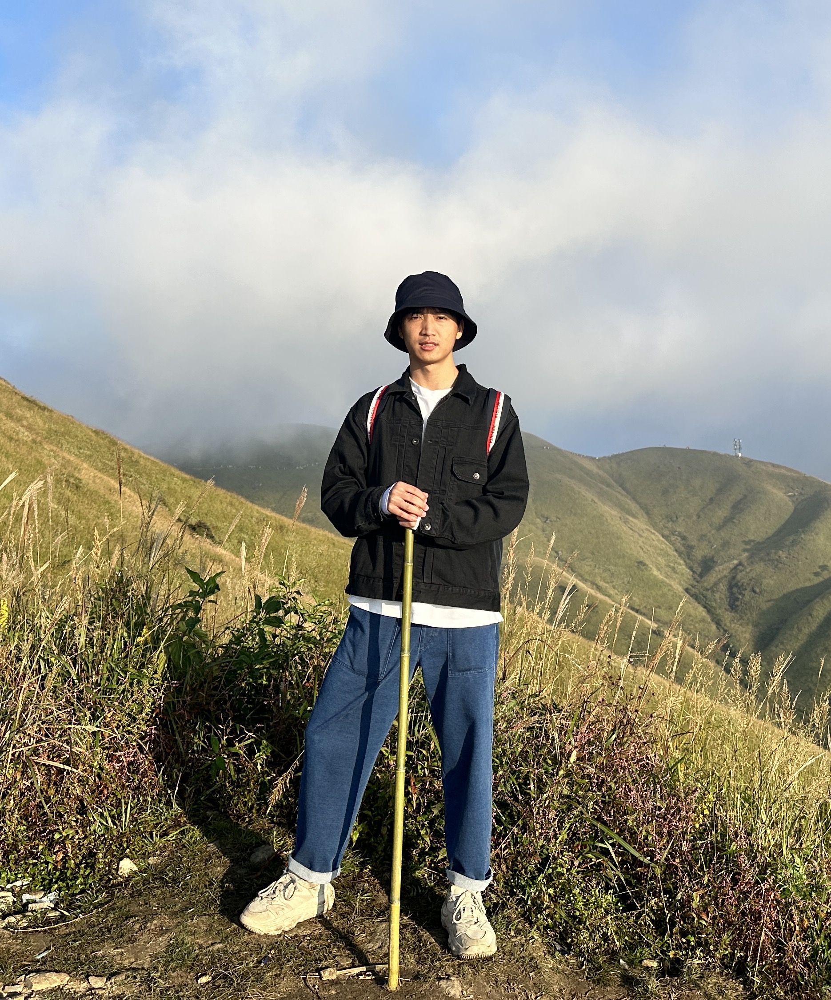
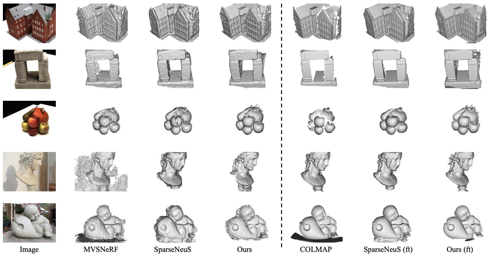
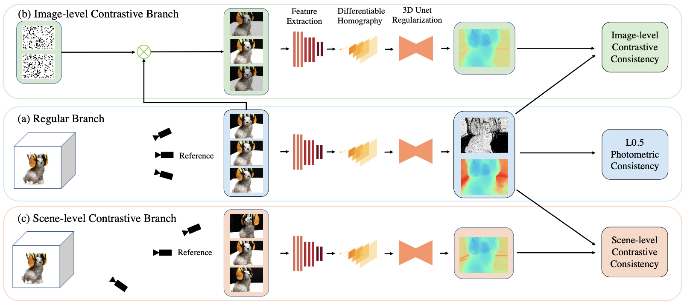
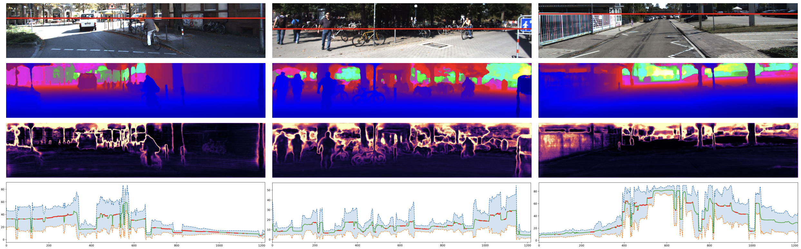
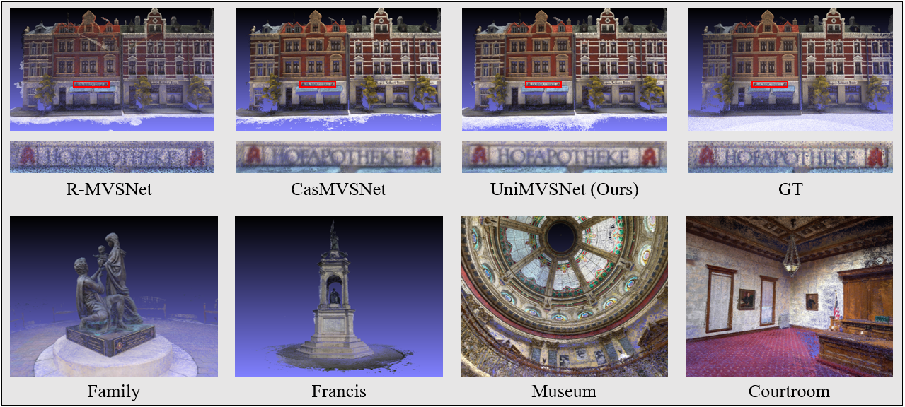

Rui Peng (彭 瑞)
I'm currently a PHD candidate in National Engineering Research Center of Visual Technology at Peking University, supervised by Prof. Ronggang Wang. Before that, I received my B. Eng. degree with honors at Chongqing University in 2020. My research interests always lie in the field of 3D vision, including depth estimation, multi-view stereo, neural rendering, surface reconstruction and gaussian splatting, and I have also recently been trying 3D generation. And I'll graduate before Jul. 2025 and am looking for a suitable position in 3D vision!
Publications



Pixelwise Adaptive Discretization with Uncertainty Sampling for Depth Completion
ACM MM, 2022
Paper | Code

Awards
- China National Scholarship
- China National Inspirational Scholarship
- First-Class Scholarship
- Ping An Bank Scholarship
Service
- Journal Reviewer: TCSVT
- Conference Reviewer: CVPR, ICCV, ACM MM
©Rui Peng. Last updated: 20th Feb., 2024.